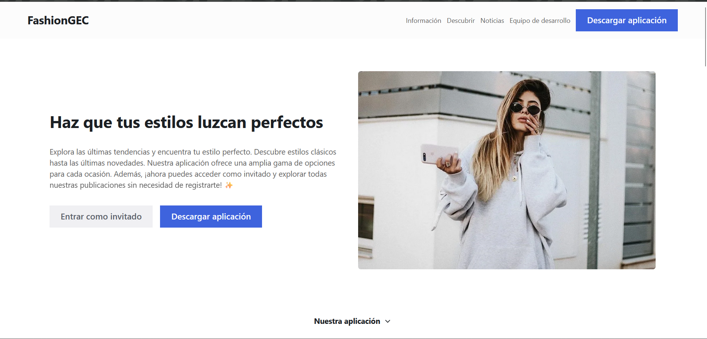

<div class="container">
    <div class="title"> 
        -- PROYECTOS --
    </div>
    <mat-divider></mat-divider>
    <mat-card class="card-proy">
        <mat-card-header>
            <div mat-card-avatar class="avatar"></div>
            <mat-card-title>
                FASHIONGEC 
            </mat-card-title>
        </mat-card-header>
        
        <mat-card-content class="content"> 
            <p>
                Sistema BACKEND para la aplicación Movil FASHIONGEC y su respectivo WEBSITE <br><br> 
                COLABORADORES:<br>
            </p>
            <ul>
                <li>
                    Gilmar Morales - Aplicación Movil
                </li>
                <li>
                    Cristian Simba - Website
                </li>
            </ul>
        </mat-card-content>
        <mat-card-actions>
            <a mat-fab extended href="https://fashiongec.vercel.app/" class="btn-enlace">FASHIONGEC.com</a>
            <a mat-fab extended href="https://fashiongec.vercel.app/" class="btn-enlace">
                <mat-icon svgIcon="source-repository"></mat-icon>REPOSITORIO</a>
        </mat-card-actions>
    </mat-card>
</div>
